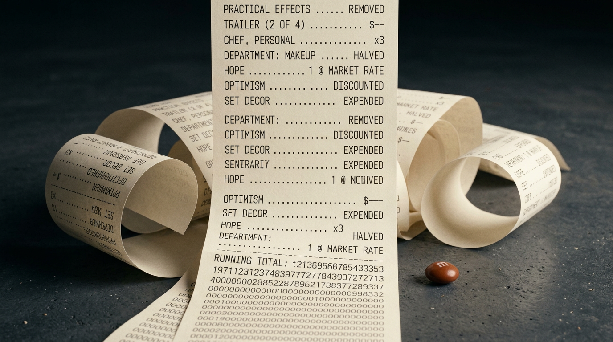

A $700 Million Doomsday: Hollywood Is Screaming About AI With Its Hand Already in the Jar
Four hundred million dollars to make it. Three hundred million to tell you it exists.
That is the reported line on Avengers: Doomsday, and if the number holds, the thing has to pull roughly $1.5 billion worldwide before anybody at Disney gets to exhale. Not "do well." Not "have legs." Break even. Get back to zero. Return to the starting line with nothing in your pockets and a slight limp.
And Robert Downey Jr. is reportedly taking home fifty million per picture, across two pictures, with performance bonuses that could double it.
For Iron Man. I mean, for Doom. Whatever. For the face.
Now hold that number in your hand, because I want to show you what it used to weigh.
STOP.
Cut the engine. We are going to 1995 first, and I need you to remember what fear looked like back then.
The Waterworld Yardstick
When I was a kid, the boogeyman of Hollywood accounting was a Kevin Costner movie about a guy with gills.
Waterworld. One hundred seventy-five million dollars. Most expensive film ever made at the time, and the industry treated that figure like a body found in a swimming pool. Trade papers ran autopsies. The sets sank — literally, an actual set went to the bottom of the ocean off Hawaii. It became shorthand. You didn't have to explain the joke. You said "Waterworld" and everyone in the room made the same face.
It grossed $264 million worldwide and got called a catastrophe for it.
(And for the record: I liked it. I still like it. The Mariner had gills and a trimaran and a fully committed Dennis Hopper with one eye, and I will not be taking questions.)
Run that $175M forward and you land somewhere around $355 million in today's money. Which means the most notorious financial disaster of my childhood would today be an ordinary Tuesday at Marvel. It wouldn't even be the most expensive thing on the lot. It would be a mid-tier bet.
Yes, yes — inflation, global box office, the China window opening and then mostly closing again, streaming windows, IMAX premiums, the whole macro lecture. I know. Save the comment.
Because the macro lecture doesn't explain the part that actually matters.
Where $700 Million Actually Goes
Here is what nobody puts in the press release.
When one performer takes a nine-figure position on a picture, that money does not appear from a separate fairy dimension. It comes out of the same bucket everything else comes out of. And the reporting on the Downey deal is not just about salary — it's the architecture around the salary. Private jet travel. Dedicated personal security. Multiple trailers on set. With personal chefs. Plural on all counts.
I want to be precise here, because this is the whole ballgame: none of that is illegal, immoral, or even unusual. He is the single most bankable asset in the history of that franchise and he negotiated like it. Good for him. I would have asked for two more chefs.
But the money is finite. And when the top of the call sheet takes a third of the production budget plus a small municipality of trailers, somebody downstream is getting a phone call. And that call is never "we've decided to trim the star's package." It is always, always, always aimed at the crew. At the VFX house that will now eat the overage. At the writers' room that gets cut from six to two. At the makeup department that discovers it can apparently function at half staff.
The savings never come from the expensive thing. They come from the many cheap things, because the many cheap things don't have lawyers.
Nobody in That Room Says No
This is the part that keeps me up.
Somewhere there is a table. Around it are people whose entire professional function is stewardship of shareholder capital. Somebody puts a slide up that says the picture now needs one-and-a-half billion dollars to get back to even, in a year when the genre it belongs to is visibly winded.
And the response is not "should we maybe... not?"
The response is a spreadsheet showing which departments can absorb the difference.
It is not that the studios are stupid. It's that nobody in the chain is incentivized to be the person who said no to Iron Man. There is no career upside in killing the $700M swing. If it works, the person who greenlit it is a genius. If it dies, it died gloriously and everyone was on board and the market shifted, what can you do. Saying no is the only move that can definitively end your career, because it is the only move that produces a counterfactual somebody can point at forever.
So the machine can only accelerate. It has no brake pedal installed. That was a cost saving in an earlier round.
The Evidence File, Which Is Getting Thick

Let me lay the receipts out, because the vibe is real but the numbers are worse than the vibe.
Thunderbolts* — $180M to produce, roughly $100M more to market. Needed about $425M to break even. Made $382.4M. Missed by around forty-three million dollars, which is a rounding error to Disney and a career-ender to a human being. Kevin Feige's own diagnosis was that audiences weren't sure if they had homework.
Superman — $225M net, $618.7M worldwide. Genuinely fine! Actually profitable! And yet half the internet spent a month arguing about whether "fine" counts as a hit anymore, which tells you the goalposts have gotten so heavy they've sunk into the turf.
Star Wars: The Mandalorian and Grogu — and here is where I have to confess something embarrassing that is also, I think, the most damning data point in this entire post.
I forgot it came out.
I genuinely did. In my head it was still upcoming — some vague future thing, sitting out there on a release calendar. Then I went to look it up and discovered it opened Memorial Day weekend. It's been out since May. It's already scheduled for Disney+. The last time it crossed my mind was seeing an ad for a Whopper with green sauce, because of Grogu.
The numbers: $165M budget, $345.7 million worldwide. Lowest-grossing live-action Star Wars film. Worst second-weekend drop in the franchise's history — seventy percent. Disney's own CEO said publicly it did not meet expectations, then pivoted to how it fuels retail and the parks.
Read that last part again. It fuels retail and the parks.
So Here's the Two-Sided Thing
Studios are, right now, publicly and loudly defending the voice of the creator. Craftsmanship. Human labor. Protecting the art.
I am not being sarcastic: that is correct and it matters and I would fight about it. The people who make these things are not a line item, and the industry's habit of treating them like one is genuinely grotesque.
And.
Netflix used generative AI to put a building collapse into a finished show. Not a test. Not a proof of concept. Final footage, in El Eternauta — an Argentine series, shot here, a building coming down in Buenos Aires, which is to say in my actual neighborhood. Ted Sarandos said the sequence came in ten times faster than the traditional pipeline, and that "the cost just wouldn't have been feasible for a show on that budget."
That is not a threat. That is a confession dressed as a press release. He is saying: without this, that scene does not exist, and neither does that show at that price.
So the position is: AI is an existential threat to the craft, and also we shipped it, and also we will absolutely ship it again, and also please do not ask us to reduce the star's chef count.
Down in the DNA — the part that actually drives decisions, not the part that gives interviews — they've already embraced it. Of course they have. When your break-even is $1.5 billion, you will adopt literally anything that moves the denominator. Anything. You would adopt a haunted lamp if it cut post by eight percent.
Why This Might Actually Save the Nerd Stuff
Here's the turn, and it's the reason I bothered writing any of this down.
Everyone frames AI in Hollywood as cheaper. Fine, true, boring. The more interesting thing is what happens when the tentpole model finishes eating itself.
Because it is going to. You cannot run an industry where every swing has to clear a billion and a half. That is not a business, it's a roulette table with a marketing department. And when those bets stop landing — not if, when — the studios don't gently retreat to mid-budget filmmaking. They stop. They consolidate, they cut, they license the library, they build another ride.
And then where does the weird stuff come from?
Not from them. It comes from the people who can now make a thing that looks like $30 million for the price of a used Corolla and a subscription. The genre gets its fix from the basement, the way it always did when the majors got scared — the way Corman fed a generation, the way straight-to-video fed the nineties, the way YouTube fed everything after.
AI doesn't save Hollywood by making Doomsday cheaper. Doomsday is unsavable; it's a spending contest with a cape on. AI saves the appetite Doomsday was built to feed, by routing it around the studio entirely.
The nerd fix survives. The infrastructure that used to deliver it doesn't. Those are two different sentences and the industry keeps reading them as one.
Quick Questions From the Cheap Seats
What is the Avengers: Doomsday budget?
Reported at roughly $400 million for production plus $300 million for marketing — about $700 million all in, which would make it the most expensive film Marvel or Disney has produced. That figure comes from trade reporting and commentary, not from Disney, so treat it as well-sourced rumor rather than a filed number. Break-even is estimated around $1.5 billion worldwide.
How much is Robert Downey Jr. getting paid for Doctor Doom?
Reports put it at about $50 million per film across Doomsday and Secret Wars, with box office bonuses that could push the total well past $100 million. The deal also reportedly includes private jet travel, personal security, and multiple on-set trailers with personal chefs.
How much did Waterworld cost?
$175 million in 1995, making it the most expensive film ever made at that point. It earned $264 million worldwide and became the industry's standing cautionary tale. Adjusted for inflation it's roughly $355 million today — less than Doomsday's reported production budget alone.
Why do movies need to make 2.5x their budget to break even?
Theaters keep roughly half of domestic ticket revenue and more of the international split, and marketing typically runs 50–100% of the production budget on top. Thunderbolts* is the clean example: $180M to make, and it needed around $425M worldwide to break even.
Are studios actually using AI?
Yes, on the record. Netflix confirmed a generative AI VFX sequence in the finished show El Eternauta, with Ted Sarandos saying it was completed ten times faster than the traditional pipeline and wouldn't have been affordable otherwise. The public position and the production position are two different documents.
Rant over. Still not sorry.
Somebody is going to greenlight a billion-dollar movie about a lamp eventually, and when they do, remember that Waterworld pays its bills to this day by getting people wet in Orlando twice an hour.
The parks always win. Plan accordingly.